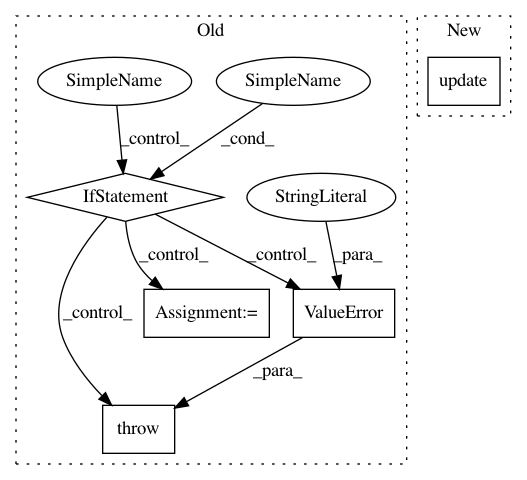

8055210d965130ded71d06ea4cc59c2e82e65b15,models/experimental/mask_rcnn/mask_rcnn_model.py,,_model_fn,#Any#Any#Any#Any#Any#,315
Before Change
if mode == tf.estimator.ModeKeys.TRAIN:
if "features" not in features:
raise ValueError(""features" is missing in TRAIN input.")
if "labels" not in features:
raise ValueError(""labels" is missing in TRAIN input.")
labels = features["labels"]
features = features["features"]
else:
if params["include_groundtruth_in_features"] and ("labels" in features):
// In include groundtruth for eval.
labels = features["labels"]
After Change
with tf.contrib.tpu.bfloat16_scope():
model_outputs = build_model_graph(
features, labels, mode == tf.estimator.ModeKeys.TRAIN, params)
model_outputs.update({
"source_id": features["source_ids"],
"image_info": features["image_info"],
})
def cast_outputs_to_float(d):
for k, v in sorted(six.iteritems(d)):
if isinstance(v, dict):
cast_outputs_to_float(v)
In pattern: SUPERPATTERN
Frequency: 3
Non-data size: 5
Instances
Project Name: tensorflow/tpu
Commit Name: 8055210d965130ded71d06ea4cc59c2e82e65b15
Time: 2019-04-09
Author: jysohn@google.com
File Name: models/experimental/mask_rcnn/mask_rcnn_model.py
Class Name:
Method Name: _model_fn
Project Name: masa-su/pixyz
Commit Name: a0021cb982c25923a75cd3a1eeaee00058f2cdbb
Time: 2020-07-27
Author: kaneko@weblab.t.u-tokyo.ac.jp
File Name: pixyz/distributions/distributions.py
Class Name: DistGraph
Method Name: sample
Project Name: apache/incubator-tvm
Commit Name: e63e08febd682f40a536075998a6839bccccd3c6
Time: 2020-04-04
Author: tqchen@users.noreply.github.com
File Name: python/tvm/driver/build_module.py
Class Name:
Method Name: build